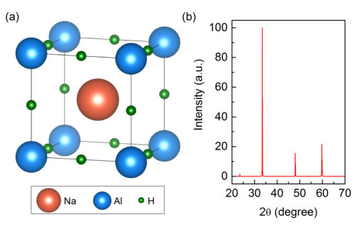
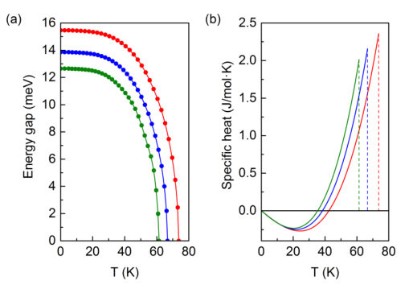
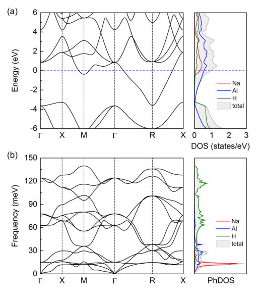
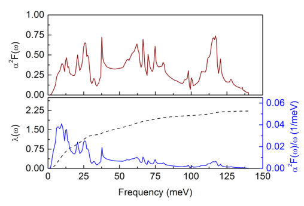
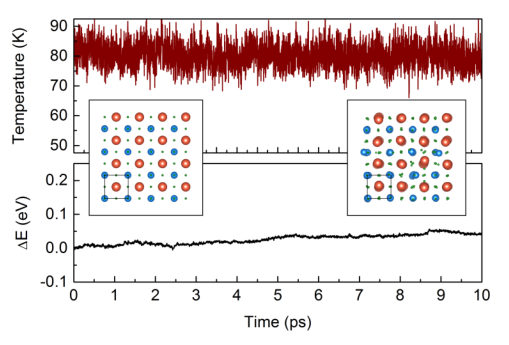

81 papers · 49 relevant · 2 highlighted
Every paper with at least one nonzero topic score, sorted by best-matching score. 🔥 marks scores ≥3/5. Click the title to jump to the full entry below; click [arXiv] to open the paper page. (secondary) marks papers from de-prioritized cond-mat archives.
measurement-induced transitions 5/5 · 🔥 entanglement & information structure 4/5 · 🔥 driven-dissipative phase transition 3/5 · 🔥 non-equilibrium dynamics 3/5 · 🔥 non-equilibrium universality 3/5 · correlated / nonlocal dissipation 2/5 · dissipative systems 2/5 · methods for driven-dissipative 2/5 · quantum measurements 2/5Rydberg arrays 5/5 · 🔥 analog quantum simulation 4/5 · 🔥 exotic spin models in light-matter 4/5 · 🔥 QC/QI experiment 3/5 · entanglement & information structure 2/5 · non-equilibrium dynamics 2/5 · quantum measurements 2/5dissipative systems 4/5 · 🔥 entanglement & information structure 4/5 · 🔥 driven-dissipative phase transition 3/5 · correlated / nonlocal dissipation 2/5 · methods for driven-dissipative 2/5 · non-equilibrium dynamics 2/5 · non-equilibrium universality 2/5dissipative systems 4/5 · 🔥 correlated / nonlocal dissipation 3/5 · 🔥 entanglement & information structure 3/5 · Tavis-Cummings & cavity-many-emitter 2/5 · methods for driven-dissipative 2/5 · non-equilibrium dynamics 2/5 · quantum measurements 2/5analog quantum simulation 4/5 · 🔥 Rydberg arrays 3/5 · 🔥 exotic spin models in light-matter 3/5 · 🔥 non-equilibrium dynamics 3/5 · entanglement & information structure 2/5 · scars & prethermalization 2/5methods for driven-dissipative 4/5 · 🔥 dissipative systems 3/5 · 🔥 entanglement & information structure 3/5 · correlated / nonlocal dissipation 2/5 · measurement-induced transitions 2/5 · quantum measurements 2/5dissipative systems 4/5 · 🔥 non-equilibrium dynamics 4/5 · 🔥 Keldysh / 2PI / non-Gaussian methods 3/5 · 🔥 non-equilibrium universality 3/5 · methods for driven-dissipative 2/5dissipative systems 4/5 · 🔥 methods for driven-dissipative 4/5 · 🔥 Kondo & dissipative impurity 3/5 · 🔥 non-equilibrium dynamics 3/5 · entanglement & information structure 2/5dissipative systems 4/5 · 🔥 Keldysh / 2PI / non-Gaussian methods 3/5 · 🔥 non-equilibrium dynamics 3/5 · correlated / nonlocal dissipation 2/5 · methods for driven-dissipative 2/5methods for driven-dissipative 4/5 · 🔥 Keldysh / 2PI / non-Gaussian methods 3/5 · 🔥 dissipative systems 3/5 · 🔥 non-equilibrium dynamics 3/5dissipative systems 4/5 · 🔥 entanglement & information structure 3/5 · correlated / nonlocal dissipation 2/5 · methods for driven-dissipative 2/5 · non-equilibrium dynamics 2/5spintronics-quantum-optics interface 4/5 · 🔥 correlated / nonlocal dissipation 3/5 · 🔥 dissipative systems 3/5 · quantum measurements 2/5quantum measurements 4/5 · 🔥 dissipative systems 3/5 · 🔥 non-equilibrium dynamics 3/5 · methods for driven-dissipative 2/5dissipative systems 4/5 · 🔥 non-equilibrium dynamics 3/5 · correlated / nonlocal dissipation 2/5 · methods for driven-dissipative 2/5dissipative systems 4/5 · 🔥 methods for driven-dissipative 4/5 · non-equilibrium dynamics 2/5QC/QI experiment 4/5 · dissipative systems 2/5 · quantum optics experiment 2/5non-equilibrium dynamics 4/5 · analog quantum simulation 2/5 · non-equilibrium universality 2/5Tavis-Cummings & cavity-many-emitter 4/5 · dissipative systems 2/5 · quantum measurements 2/5dissipative systems 4/5 · methods for driven-dissipative 2/5 · non-equilibrium dynamics 2/5quantum measurements 4/5 · entanglement & information structure 2/5QC/QI experiment 4/5(secondary) — 🔥 QC/QI experiment 4/5(secondary) — 🔥 dissipative systems 3/5 · 🔥 non-equilibrium dynamics 3/5 · correlated / nonlocal dissipation 2/5 · driven-dissipative phase transition 2/5 · methods for driven-dissipative 2/5 · non-equilibrium universality 2/5driven-dissipative phase transition 3/5 · 🔥 non-equilibrium dynamics 3/5 · 🔥 non-equilibrium universality 3/5 · dissipative systems 2/5 · methods for driven-dissipative 2/5driven-dissipative phase transition 3/5 · 🔥 non-equilibrium universality 3/5 · Keldysh / 2PI / non-Gaussian methods 2/5 · dissipative systems 2/5 · non-equilibrium dynamics 2/5dissipative systems 3/5 · entanglement & information structure 2/5 · methods for driven-dissipative 2/5 · non-equilibrium dynamics 2/5 · quantum measurements 2/5(secondary) — 🔥 non-equilibrium dynamics 3/5 · Keldysh / 2PI / non-Gaussian methods 2/5 · dissipative systems 2/5 · methods for driven-dissipative 2/5non-equilibrium dynamics 3/5 · correlated cavity matter 2/5 · driven-dissipative phase transition 2/5 · non-equilibrium universality 2/5entanglement & information structure 3/5 · dissipative systems 2/5 · quantum measurements 2/5entanglement & information structure 3/5 · dissipative systems 2/5quantum measurements 3/5 · analog quantum simulation 2/5QC/QI experiment 3/5entanglement & information structure 3/5Keldysh / 2PI / non-Gaussian methods 2/5 · dissipative systems 2/5 · methods for driven-dissipative 2/5 · non-equilibrium dynamics 2/5dissipative systems 2/5 · entanglement & information structure 2/5 · quantum measurements 1/5(secondary) — analog quantum simulation 2/5 · non-equilibrium dynamics 2/5methods for driven-dissipative 2/5 · non-equilibrium dynamics 2/5entanglement & information structure 2/5 · quantum measurements 2/5correlated cavity matter 2/5(secondary) — spintronics-quantum-optics interface 2/5Keldysh / 2PI / non-Gaussian methods 2/5Keldysh / 2PI / non-Gaussian methods 2/5(secondary) — spintronics-quantum-optics interface 2/5spintronics-quantum-optics interface 2/5(secondary) — Keldysh / 2PI / non-Gaussian methods 2/5(secondary) — spintronics-quantum-optics interface 2/5(secondary) — QC/QI experiment 2/5Keldysh / 2PI / non-Gaussian methods 2/5exotic spin models in light-matter 2/5Papers by authors on your watch list. Click the title to jump to the full entry below; click [arXiv] to open the paper page.
Papers from quant-ph and your primary cond-mat archives (quant-gas, stat-mech, str-el, dis-nn). Highlighted papers (⭐) come first, then everything else sorted by topic-relevance score, highest first.
Authors: Izabela A. Wrona, Yinwei Li, Radoslaw Szczesniak, Artur P. Durajski
Type: theory · Category: strongly correlated electrons · PDF: https://arxiv.org/pdf/2604.22300v1
Analysis basis: full PDF text, analyzed in chunks





Main problem. Investigation of the potential for high-temperature, strong-coupling superconductivity in a hypothetical cubic phase of the ternary hydride NaAlH3 at ambient pressure.
Main result. The study predicts a superconducting critical temperature (Tc) of up to 73.7 K with an exceptionally strong electron-phonon coupling constant (lambda) of 2.23, indicating a strong-coupling regime.
Method. First-principles calculations using Density Functional Theory (DFT) and the Migdal-Eliashberg formalism, supplemented by ab initio molecular dynamics (AIMD) for stability testing.
Summary. This paper explores the possibility of high-temperature superconductivity in a hypothetical cubic phase of the sodium aluminum hydride (NaAlH3) at ambient pressure. Using advanced first-principles methods, the authors predict a very high superconducting transition temperature of up to 73.7 K. The superconductivity is driven by extremely strong electron-phonon coupling. The study also demonstrates that this phase is predicted to be dynamically and thermally stable, making it a significant theoretical candidate for high-Tc hydride research.
Model / system. A hypothetical cubic Pm-3m phase of the ternary hydride NaAlH3, characterized by a metallic electronic structure and a covalent-metallic environment involving Al-H and Na-derived states.
Key observables. Superconducting critical temperature (Tc), electron-phonon coupling constant (lambda), superconducting energy gap ratio (2Delta/kBTc), specific heat jump (deltaC/gammaTc), and isotope coefficient (alpha).
Important parameters / regimes. Coulomb pseudopotential (mu*) values of 0.1, 0.15, and 0.2; pressure range from 0 to 0.2 GPa; lambda = 2.23.
Assumptions / limitations. The NaAlH3 phase is hypothetical and metastable; results depend on the choice of the Coulomb pseudopotential (mu*); the study is limited to the DFT and Migdal-Eliashberg theoretical framework.
Figures summary. Fig 1: Optimized cubic structure and simulated XRD pattern. Fig 2: Electronic band structure and phonon dispersion/density of states. Fig 3: Eliashberg spectral function and cumulative data.
Paper structure. The paper introduces the hypothetical NaAlH3 phase, details the DFT and Migdal-Eliashberg computational framework, presents results on structural/thermal stability, analyzes superconducting properties (Tc, lambda, gap ratio), and compares the system to isostructural analogs.
We present a comprehensive first-principles investigation of a hypothetical cubic Pm-3m phase of the ternary hydride NaAlH3, focusing on its lattice dynamics, electronic structure, and electron-phonon-mediated superconducting properties at ambient pressure. Using density functional theory and the Migdal-Eliashberg formalism, we find an exceptionally strong electron-phonon coupling ($λ=2.23$), resulting in a superconducting critical temperature of up to 73.7 K for a Coulomb pseudopotential $μ^* = 0.1$. Phonon dispersion calculations, complemented by ab initio molecular dynamics simulations, indicate dynamic and thermal stability within the adopted theoretical framework. The electronic structure exhibits a metallic character with substantial contributions from Al- and Na-derived states at the Fermi level. The resulting superconducting gap ratio ($2Δ(0)/k_B T_c \approx 4.8$) and specific heat jump ($ΔC/γT_c \approx 2.2$) significantly exceed BCS weak-coupling predictions, highlighting the strong-coupling nature of superconductivity in this hypothetical phase.